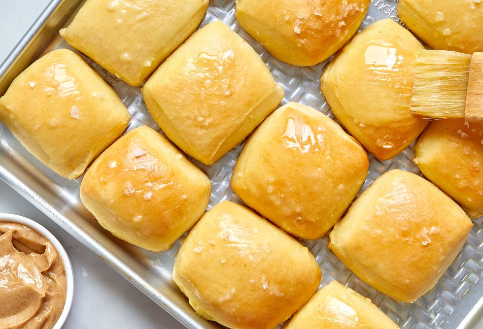

Chicken Parm

This is a picture of the buttery rolls at Texas Roadhouse! I hope you are good baking!
Ingredients
Dough:
- 1 1/2 c. (340 g.) whole milk
- 1/4 c. (50 g.) granulated sugar
- 1 (1/4-oz.) packet or 2 1/4 tsp. active dry yeast
- 3 large eggs, beaten to blend
- 4 Tbsp. (1/2 stick) unsalted butter, softened
- 4 tsp. kosher salt
- 6 3/4 c. (810 g.) all-purpose flour, plus more for dusting
- Neutral oil, for greasing
Chicken
- 1 Tbsp. confectioners' sugar
- 1 tsp. honey
- 1 tsp. kosher salt
- 3/4 tsp. ground cinnamon
- 3/4 c. (1 1/2 sticks) unsalted butter, softened, divided
- Flaky sea salt (optional)
Directions
Dough:
- In a small saucepan over medium heat, heat milk until warm to the touch, between 100° to 110°. In the large bowl of a stand mixer fitted with the dough hook, combine warm milk, granulated sugar, and yeast. Let sit until yeast is dissolved and foamy, about 10 minutes.
- Add eggs, butter, and kosher salt and beat on low speed until just combined. Add flour and continue to beat on low speed until dough comes together, about 5 minutes.
Chicken:
- In a shallow bowl, combine panko, garlic powder, and 1 cup Parmesan. Into another shallow bowl, pour flour. In a third shallow bowl, beat eggs with 1 tablespoon water.
- Pat chicken dry; season with salt and pepper. Dip into flour, shaking off excess, then into egg, then into panko mixture, gently pressing to adhere.
- In a small bowl, mix mozzarella and remaining 1 cup Parmesan.
- Heat broiler. In a large, heavy pot over medium heat, heat oil until a deep-fry or instant-read thermometer registers 350°; if it smokes a bit, that's okay. Set a wire rack in a baking sheet.
- Working one at a time, fry chicken until one side is golden brown, about 1 minute. Flip and continue to fry until golden brown on the other side and the sound of the frying chicken gets slightly louder—this is the moisture evaporating from the chicken—about 1 minute more. Transfer to prepared rack. Repeat with remaining chicken. Spoon some marinara over chicken. Sprinkle with cheese mixture.
- Broil, watching carefully, until cheese is melted and brown spots form, about 2 minutes.
- Divide chicken among plates. Top with basil. Serve with remaining marinara alongside.